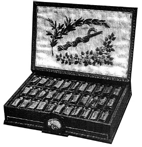

ŞEKİL 79. Sedef kakmalı kitap şeklinde, imparatorun homeopatik gezi ecza sandığı: İçinde etiketli 33 ilaç şişesi bulunmakta; iç kapakta beyaz ipek üzerine çiçek işlemeleri ve bunların ortasında Eskülap’ın yılanlı âsâsı (“caduceus / caduceum”; kadüse); âsânın üzerinde ise homeopatinin kurucusu olan hekim “Hanemann”ın [sic. Hahnemann] adı yazılıdır (1800 yılı dolayı, Schweizerisches Pharmazie-Historisches Museum, Basel).37